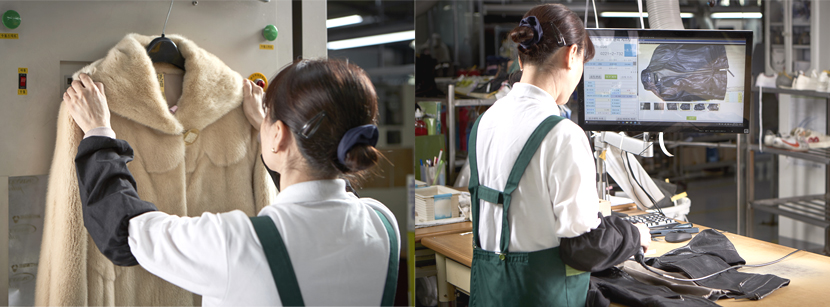
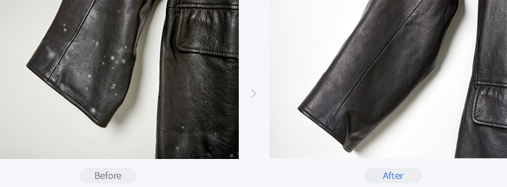

가죽, 모피
전문가의 손길이 필요한 가죽, 모피 세탁서비스
전문가의 손길이 필요한
가죽, 모피 세탁서비스

"가죽, 모피 전문가들이 옷의 특성과 오염에 따라 꼼꼼하게
세탁해 드립니다."
가죽·모피류는 전문적인 세탁 공정이 필요하기 때문에
반드시 믿을 수 있는 전문 세탁업체에 맡기셔야 합니다.
가죽,모피 세탁
서비스 안내

- 일본, 미국 등 선진국의 가죽 세탁·염색 기술 도입 / 최고 품질의 전용 세탁기,
세탁세제와 염색 약품을 이용하여 서비스 - 본사에서 직접 운영하는 특수 가죽 세탁부의 숙련된 가죽 전문가들이 직접 세
탁과 염색을 진행 - 가죽에 곰팡이가 생겼을 시, 곰팡이 얼룩제거를 위한 특수처리가 필요.
- 가죽 표면의 곰팡이 제거 처리 후, 곰팡이로 손상된 가죽 표면을 염색으로 복구
가죽 자켓
곰팡이 제거

- 이태리산 최고급 일체형 드라이크리닝 기계로 손상없이 깨끗이 세탁하고 마무리하였습니다.
주의사항
- 가죽소재의 특성상, 옷에서 나는 퀴퀴한 곰팡이 냄새는 세탁이나 곰팡이 얼룩제거서비스를 하더라도 100% 제거되지 않을 수 있습니다.
100% 제거되지 않을 수 있습니다.
세탁기간
- 보통 10 ~ 15일이 소요되며 오염이 심한 경우나 세탁물이 많은 4,5월에는 더 오래 걸릴 수 있습니다.
요금안내
품목
요금
가죽장갑
15,000원 ~
검정/유색가죽점퍼
30,000원 ~
무스탕자켓
41,000원 ~
무스탕반코트
44,000원 ~
밍크반코트
65,000원 ~
* 가죽곰팡이얼룩제거 : 개별, 특수 처리가 필요한 서비스로 해당품목 세탁요금에 100%의 추가요금이 부과됩니다.
* 가죽과 모피의 요금은 소재와 사이즈에 따라 차이가 있습니다. 정확한 요금은 매장에 직접 제품을 보여주시고 문의해 주세요.